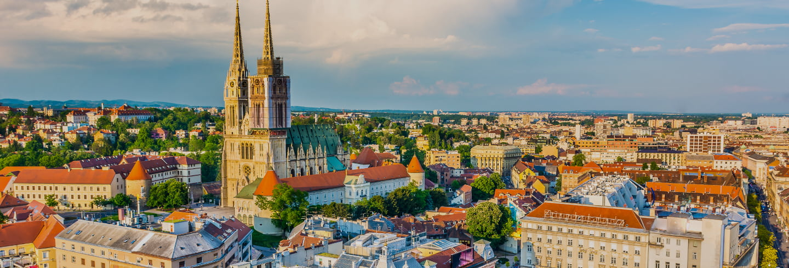

Croatia officially the Republic of Croatia, is a country
at the crossroads of Central and Southeast Europe, on the
Adriatic Sea. It borders Slovenia to the northwest,
Hungary to the northeast, Serbia to the east, Bosnia
and Herzegovina, and Montenegro to the southeast, sharing
a maritime border with Italy. Its capital, Zagreb, forms
one of the country's primary subdivisions, along with
twenty counties. Croatia has an area of 56,594 square
kilometres (21,851 square miles) and a population of
4.28 million, most of whom are Roman Catholics and
ethnic Croats.
Inhabited since the Paleolithic Age, the Croats
arrived in the area in the 6th century and organised
the territory into two duchies by the 9th century.
Croatia was first internationally recognized as
an independent state on 7 June 879 during the
reign of duke Branimir. Tomislav became the
first king by 925, elevating Croatia to the
status of a kingdom, which retained its
sovereignty for nearly two centuries.
During the succession crisis after the
Trpimirović dynasty ended, Croatia
entered a personal union with Hungary
in 1102. In 1527, faced with Ottoman
conquest, the Croatian Parliament elected
Ferdinand I of Austria to the Croatian
throne.

Flag of Croatia

City of Zagreb
The sovereign state of Croatia is a republic
governed under a parliamentary system and a
developed country with a very high standard of
living. It is a member of the European Union (EU),
the United Nations (UN), the Council of Europe,
NATO, the World Trade Organization (WTO), and a
founding member of the Union for the Mediterranean.
As an active participant in the UN peacekeeping forces,
Croatia has contributed troops to the NATO-led mission in
Afghanistan and took a non-permanent seat on the UN
Security Council for the 2008–2009 term. Since 2000,
the Croatian government has constantly invested in
infrastructure, especially transport routes and
facilities along the Pan-European corridors.
Croatia's economy is dominated by service and
industrial sectors and agriculture. Tourism is
a significant source of revenue, with Croatia
ranked among the top 20 most popular tourist
destinations in the world. The state controls
a part of the economy, with substantial government
expenditure. Croatia is located in Central and
Southeast Europe, on the coast of the Adriatic
Sea. It borders Hungary to the northeast, Serbia
to the east, Bosnia and Herzegovina and Montenegro
to the southeast, and Slovenia to the northwest. It
lies mostly between latitudes 42° and 47° N and longitudes
13° and 20° E. Part of the territory in the extreme
south surrounding Dubrovnik is a practical exclave
connected to the rest of the mainland by territorial
waters, but separated on land by a short coastline
strip belonging to Bosnia and Herzegovina around Neum.
Night in Croatia
The territory covers 56,594 square kilometres
(21,851 square miles), consisting of 56,414 square
kilometres (21,782 square miles) of land and 128 square
kilometres (49 square miles) of water. It
is the 127th largest country in the world. Elevation ranges
from the mountains of the Dinaric Alps with the highest point
of the Dinara peak at 1,831 metres (6,007 feet) near the border
with Bosnia and Herzegovina in the south to the shore of
the Adriatic Sea which makes up its entire southwest border.
Insular Croatia consists of over a thousand islands and islets
varying in size, 48 of which are permanently inhabited. The
largest islands are Cres and Krk, each of them having an area of
around 405 square kilometres (156 square miles). The hilly northern
parts of Hrvatsko Zagorje and the flat plains of Slavonia in the
east which is part of the Pannonian Basin are traversed by major
rivers such as Danube, Drava, Kupa, and Sava.
The Danube, Europe's second longest river, runs through the
city of Vukovar in the extreme east and forms part of the
border with Vojvodina. The central and southern regions near
the Adriatic coastline and islands consist of low mountains and
forested highlands. Natural resources found in the country in
quantities significant enough for production include oil, coal,
bauxite, low-grade iron ore, calcium, gypsum, natural asphalt,
silica, mica, clays, salt, and hydropower. Karst topography makes
up about half of Croatia and is especially prominent in the Dinaric
Alps. There are a number of deep caves in Croatia, 49 of which are
deeper than 250 m (820.21 ft), 14 of them deeper than 500 m (1,640.42 ft)
and three deeper than 1,000 m (3,280.84 ft). Croatia's most famous lakes
are the Plitvice lakes, a system of 16 lakes with waterfalls connecting
them over dolomite and limestone cascades.
| Capital City | Zagreb |
| Official Language | Croatian |
| Total Area | 56,594 square km (21,851 sq m) |
| Currency | Kuna |
| HDI | 0.831 |
The name of Croatia derives from Medieval Latin Croātia.
Itself a derivation of North-West Slavic *Xrovat-, by liquid
metathesis from Common Slavic period *Xorvat, from proposed
Proto-Slavic *Xъrvátъ which possibly comes from Old Persian
*xaraxwat-. The word is attested by the Old Iranian toponym Harahvait-
which is the native name of Arachosia.
The origin of the name is uncertain, but is thought to be a Gothic or
Indo-Aryan term assigned to a Slavic tribe. The oldest preserved
record of the Croatian ethnonym *xъrvatъ is of variable stem, attested
in the Baška tablet in style zvъnъmirъ kralъ xrъvatъskъ ("Zvonimir, Croatian king").
The first attestation of the Latin term is attributed to a charter of Duke Trpimir
from the year 852. The original is lost, and just a 1568 copy is preserved,
leading to doubts over the authenticity of the claim. The oldest preserved stone
inscription is the 9th-century Branimir Inscription found near Benkovac,
where Duke Branimir is styled Dux Cruatorvm. The inscription is not believed
to be dated accurately, but is likely to be from during the period of 879–892,
during Branimir's rule.
Croatia can be subdivided between a number of ecoregions
because of its climate and geomorphology. The country is
consequently one of the richest in Europe in terms of
biodiversity. There are four types of biogeographical
regions in Croatia—Mediterranean along the coast and
in its immediate hinterland, Alpine in most of Lika and
Gorski Kotar, Pannonian along Drava and Danube, and continental
in the remaining areas. One of the most significant are karst habitats
which include submerged karst, such as Zrmanja and Krka canyons and
tufa barriers, as well as underground habitats.
The karst geology harbours approximately 7,000 caves and pits,
some of which are the habitat of the only known aquatic
cave vertebrate—the olm. Forests are also significantly present
in the country, as they cover 2,490,000 hectares (6,200,000 acres)
representing 44% of Croatian land surface. Other habitat types include
wetlands, grasslands, bogs, fens, scrub habitats, coastal and marine habitats.
In terms of phytogeography, Croatia is a part of the Boreal Kingdom and is
a part of Illyrian and Central European provinces of the Circumboreal
Region and the Adriatic province of the Mediterranean Region. The World
Wide Fund for Nature divides Croatia between three ecoregions—Pannonian
mixed forests, Dinaric Mountains mixed forests and Illyrian deciduous forests.
Map of Croatia
There are 37,000 known species in Croatia, but their
actual number is estimated to be between 50,000 and 100,000.
The claim is supported by nearly 400 new taxa of invertebrates
discovered in Croatia in the first half of the 2000s alone.
There are more than a thousand endemic species, especially in
Velebit and Biokovo mountains, Adriatic islands and karst rivers.
Legislation protects 1,131 species. The most serious threat to species
is loss and degradation of habitats. A further problem is presented by
invasive alien species, especially Caulerpa taxifolia algae.
The invasive algae are regularly monitored and removed to
protect the benthic habitat. Indigenous sorts of cultivated
plants and breeds of domesticated animals are also numerous.
Those include five breeds of horses, five breeds of cattle,
eight breeds of sheep, two breeds of pigs, and a poultry breed.
Even the indigenous breeds include nine endangered or critically
endangered ones. There are 444 protected areas of Croatia, encompassing
9% of the country. Those include eight national parks, two strict reserves,
and ten nature parks. The most famous protected area and the oldest
national park in Croatia is the Plitvice Lakes National Park, a UNESCO
World Heritage Site. Velebit Nature Park is a part of the UNESCO Man and
the Biosphere Programme. The strict and special reserves, as well as the
national and nature parks, are managed and protected by the central
government, while other protected areas are managed by counties. In
2005, the National Ecological Network was set up, as the first step
in the preparation of the EU accession and joining of the Natura 2000 network.
Zagreb
Velebit National Park